Chapitre 4 Hémoglobine hgb (g/dL)
4.0.1 Exploration visuelle, boxplots
ggplot(df, aes(x = aa, y = hgb, colour = sex, fill = sex)) +
geom_boxplot(alpha = 0.5, position = position_dodge(width = 0.8), fatten = NULL) +
stat_summary(fun.y = mean, position = position_dodge(width = 0.8)) +
theme_bw() +
ylab("Hémoglobine (g/dL)")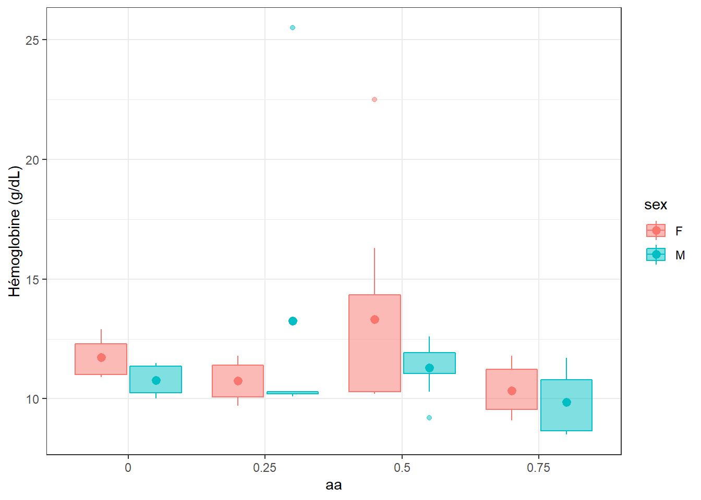
4.0.2 Moyennes et intervalles de confiance
## aa sex N hgb sd se ci
## 1 0 F 7 11.72857 0.8459990 0.3197576 0.7824186
## 2 0 M 8 10.77500 0.6158618 0.2177400 0.5148733
## 3 0.25 F 5 10.75400 0.8792497 0.3932124 1.0917327
## 4 0.25 M 5 13.26000 6.8427334 3.0601634 8.4963757
## 5 0.5 F 7 13.31429 4.5910887 1.7352684 4.2460488
## 6 0.5 M 8 11.30000 1.0954451 0.3872983 0.9158150
## 7 0.75 F 6 10.33500 1.1230984 0.4585030 1.1786195
## 8 0.75 M 4 9.85000 1.5264338 0.7632169 2.42889674.0.3 Visualisation, courbes
p <- position_dodge(0.1)
ggplot(df_ic, aes(x = aa, y = hgb, colour = sex, group = sex)) +
geom_errorbar(aes(ymin = hgb - ci, ymax = hgb + ci), width = .1, position = p) +
geom_line(position = p, size = 1) +
geom_point(position = p, size = 2)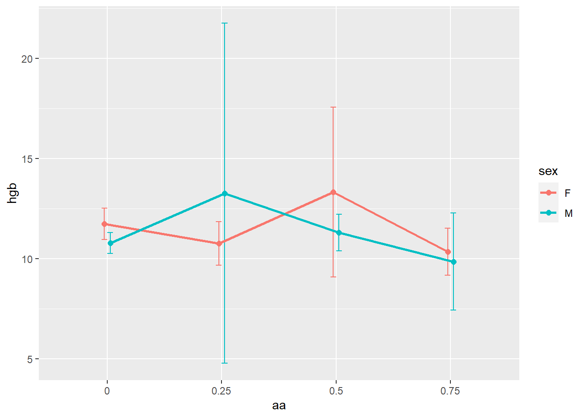
4.0.4 Identifier les valeurs aberrantes univariées
## # A tibble: 4 x 6
## aa id sex hgb is.outlier is.extreme
## <fct> <int> <fct> <dbl> <lgl> <lgl>
## 1 0 9 F 12.9 TRUE FALSE
## 2 0.25 18 M 25.5 TRUE TRUE
## 3 0.5 34 F 16.3 TRUE FALSE
## 4 0.5 39 F 22.5 TRUE TRUE## # A tibble: 3 x 6
## sex id aa hgb is.outlier is.extreme
## <fct> <int> <fct> <dbl> <lgl> <lgl>
## 1 F 34 0.5 16.3 TRUE FALSE
## 2 F 39 0.5 22.5 TRUE TRUE
## 3 M 18 0.25 25.5 TRUE TRUEOn exclura les 3 dernières …
4.0.5 Revisualisation boxplots sans les valeurs extrèmes
ggplot(df, aes(x = aa, y = hgb, colour = sex, fill = sex)) +
geom_boxplot(alpha = 0.5, position = position_dodge(width = 0.8), fatten = NULL) +
stat_summary(fun.y = mean, position = position_dodge(width = 0.8)) +
theme_bw() +
ylab("Hémoglobine (g/dL)")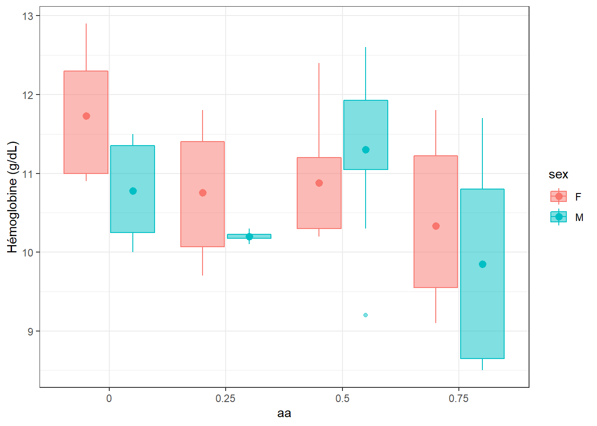
4.0.6 Revisualisation courbes sans les valeurs extrèmes
## aa sex N hgb sd se ci
## 1 0 F 7 11.72857 0.84599899 0.31975756 0.7824186
## 2 0 M 8 10.77500 0.61586177 0.21774002 0.5148733
## 3 0.25 F 5 10.75400 0.87924968 0.39321241 1.0917327
## 4 0.25 M 4 10.20000 0.08164966 0.04082483 0.1299228
## 5 0.5 F 5 10.88000 0.94180677 0.42118879 1.1694076
## 6 0.5 M 8 11.30000 1.09544512 0.38729833 0.9158150
## 7 0.75 F 6 10.33500 1.12309839 0.45850300 1.1786195
## 8 0.75 M 4 9.85000 1.52643375 0.76321688 2.4288967ggplot(df_ic, aes(x = aa, y = hgb, colour = sex, group = sex)) +
geom_errorbar(aes(ymin = hgb - ci, ymax = hgb + ci), width = .1, position = p) +
geom_line(position = p, size = 1) +
geom_point(position = p, size = 2)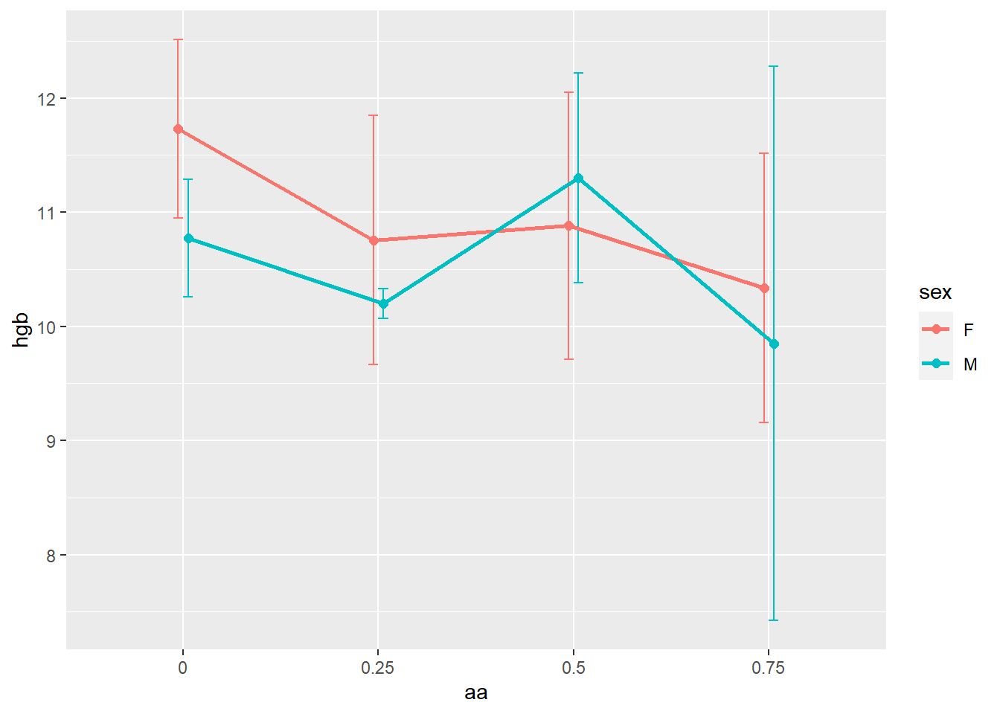
4.0.7 ANOVA sans les outliers
lm <- lm(hgb ~ aa * sex,
contrasts = list(aa = contr.sum, sex = contr.sum),
data = df)
Anova(lm, type = 3)## Anova Table (Type III tests)
##
## Response: hgb
## Sum Sq Df F value Pr(>F)
## (Intercept) 5046.5 1 5574.4699 < 2e-16 ***
## aa 9.8 3 3.6108 0.02151 *
## sex 1.7 1 1.8716 0.17912
## aa:sex 3.3 3 1.2086 0.31939
## Residuals 35.3 39
## ---
## Signif. codes: 0 '***' 0.001 '**' 0.01 '*' 0.05 '.' 0.1 ' ' 1L’interaction n’est pas significative. Il y a une différence entre les effets de certaines doses de AA. Mais vérifions la validité de l’ANOVA.
4.0.8 Homogénéité des variances
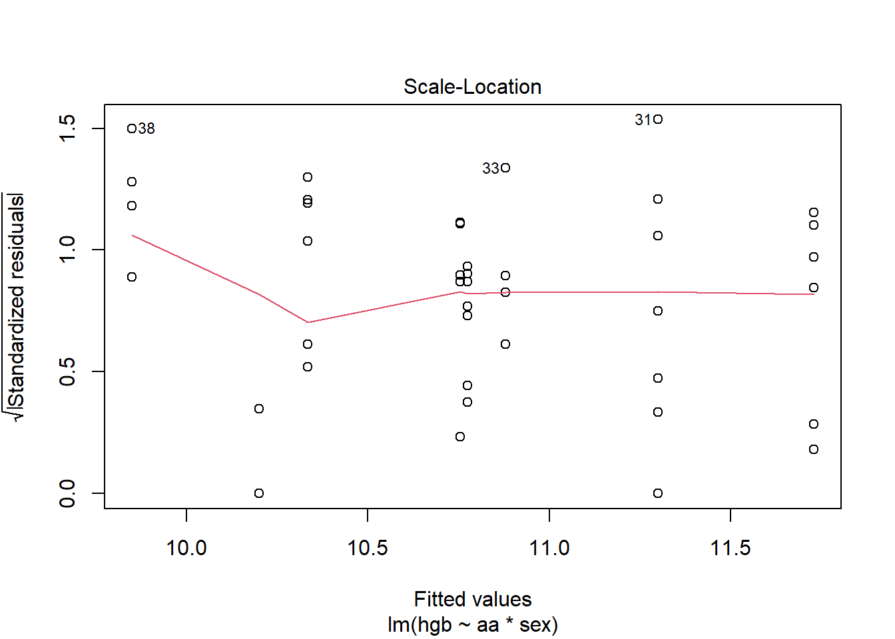
## # A tibble: 1 x 3
## variable statistic p.value
## <chr> <dbl> <dbl>
## 1 residuals(lm) 0.984 0.7444.0.9 Ajustement du modèle sans le terme d’interaction
## Anova Table (Type II tests)
##
## Response: hgb
## Sum Sq Df F value Pr(>F)
## aa 10.254 3 3.7201 0.01847 *
## sex 1.902 1 2.0699 0.15765
## Residuals 38.589 42
## ---
## Signif. codes: 0 '***' 0.001 '**' 0.01 '*' 0.05 '.' 0.1 ' ' 1Il n’y a une différence d’effet significatif entre certaines doses AA.
4.0.10 Comparaisons par paires
On pourrait ramener à une anova à 1 facteur puisqu’il n’y a pas de différence pour l’autre facteur. Mais montrons quand même les contrastes.
C1 <- glht(lm, mcp(aa = "Tukey"))$linfct
C2 <- glht(lm, mcp(sex = "Tukey"))$linfct
C <- rbind(C1, C2)
C## (Intercept) aa0.25 aa0.5 aa0.75 sexM
## 0.25 - 0 0 1 0 0 0
## 0.5 - 0 0 0 1 0 0
## 0.75 - 0 0 0 0 1 0
## 0.5 - 0.25 0 -1 1 0 0
## 0.75 - 0.25 0 -1 0 1 0
## 0.75 - 0.5 0 0 -1 1 0
## M - F 0 0 0 0 1##
## Simultaneous Tests for General Linear Hypotheses
##
## Fit: lm(formula = hgb ~ aa + sex, data = df)
##
## Linear Hypotheses:
## Estimate Std. Error t value Pr(>|t|)
## 0.25 - 0 == 0 -0.74848 0.40494 -1.848 0.3135
## 0.5 - 0 == 0 -0.04807 0.36396 -0.132 0.9999
## 0.75 - 0 == 0 -1.13338 0.39314 -2.883 0.0358 *
## 0.5 - 0.25 == 0 0.70040 0.41846 1.674 0.4101
## 0.75 - 0.25 == 0 -0.38490 0.44059 -0.874 0.8849
## 0.75 - 0.5 == 0 -1.08531 0.40778 -2.662 0.0613 .
## M - F == 0 -0.40786 0.28349 -1.439 0.5576
## ---
## Signif. codes: 0 '***' 0.001 '**' 0.01 '*' 0.05 '.' 0.1 ' ' 1
## (Adjusted p values reported -- single-step method)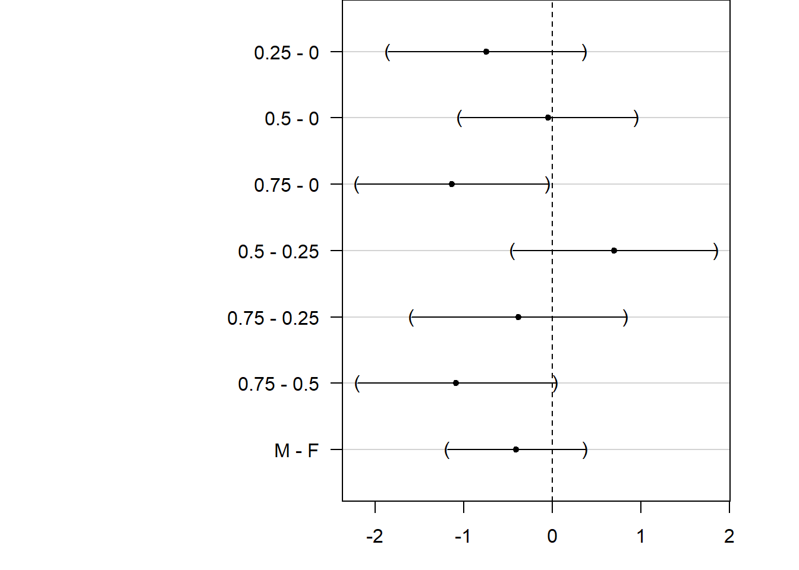
=> Différence significative entre Aa_0.75 et Aa_0. Le témoin a un effet plus grand que la dose 0.75 !
4.1 L’hématocrite hct (%)
4.1.1 Exploration visuelle, boxplots
ggplot(df, aes(x = aa, y = hct, colour = sex, fill = sex)) +
geom_boxplot(alpha = 0.5, position = position_dodge(width = 0.8), fatten = NULL) +
stat_summary(fun.y = mean, position = position_dodge(width = 0.8)) +
theme_bw() +
ylab("Hématocrite (%)")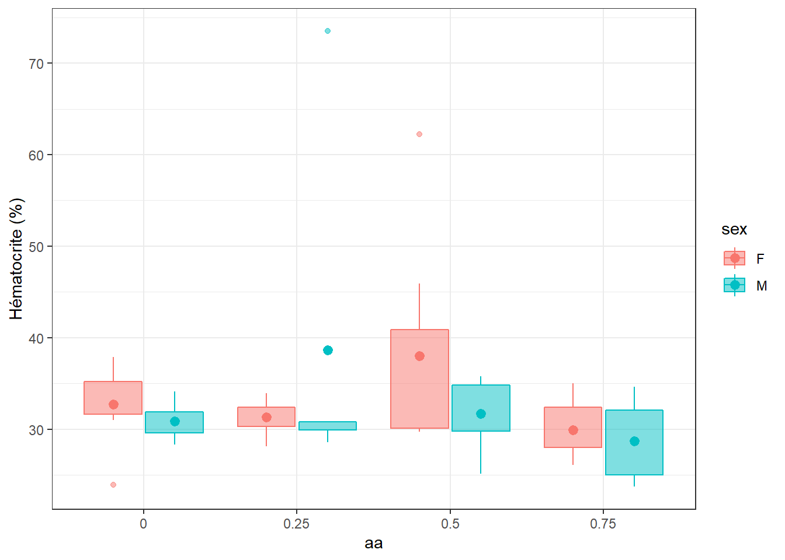
4.1.2 Moyennes et intervalles de confiance
## aa sex N hct sd se ci
## 1 0 F 7 32.70000 4.544227 1.7175564 4.202709
## 2 0 M 8 30.88750 1.956993 0.6919015 1.636087
## 3 0.25 F 5 31.28000 2.200454 0.9840732 2.732225
## 4 0.25 M 5 38.62000 19.515558 8.7276228 24.231766
## 5 0.5 F 7 38.02857 12.097068 4.5722618 11.187922
## 6 0.5 M 8 31.67500 4.075975 1.4410747 3.407600
## 7 0.75 F 6 29.91667 3.560571 1.4535971 3.736590
## 8 0.75 M 4 28.72500 5.064501 2.5322503 8.0587514.1.3 Visualisation, courbes
p <- position_dodge(0.1)
ggplot(df_ic, aes(x = aa, y = hct, colour = sex, group = sex)) +
geom_errorbar(aes(ymin = hct - ci, ymax = hct + ci), width =.1, position = p) +
geom_line(position = p, size = 1) +
geom_point(position = p, size = 2)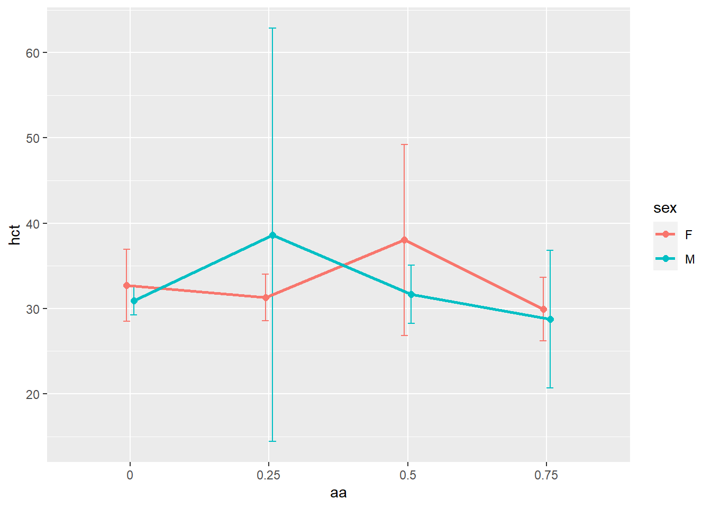
Pratiquement même allure que la variable précédente …
4.1.4 Identifier les valeurs aberrantes univariées
## # A tibble: 4 x 6
## aa id sex hct is.outlier is.extreme
## <fct> <int> <fct> <dbl> <lgl> <lgl>
## 1 0 13 F 23.9 TRUE FALSE
## 2 0.25 18 M 73.5 TRUE TRUE
## 3 0.5 34 F 45.9 TRUE FALSE
## 4 0.5 39 F 62.2 TRUE TRUE## # A tibble: 3 x 6
## sex id aa hct is.outlier is.extreme
## <fct> <int> <fct> <dbl> <lgl> <lgl>
## 1 F 34 0.5 45.9 TRUE FALSE
## 2 F 39 0.5 62.2 TRUE TRUE
## 3 M 18 0.25 73.5 TRUE TRUEOn exclura les 3 dernières car l’id 34 déforme fortement la distribution si cette vaeur n’est pas écartée …
4.1.5 Revisualisation boxplots sans les valeurs extrèmes
ggplot(df, aes(x = aa, y = hct, colour = sex, fill = sex)) +
geom_boxplot(alpha = 0.5, position = position_dodge(width = 0.8), fatten = NULL) +
stat_summary(fun.y = mean, position = position_dodge(width = 0.8)) +
theme_bw() +
ylab("Hématocrite (%)")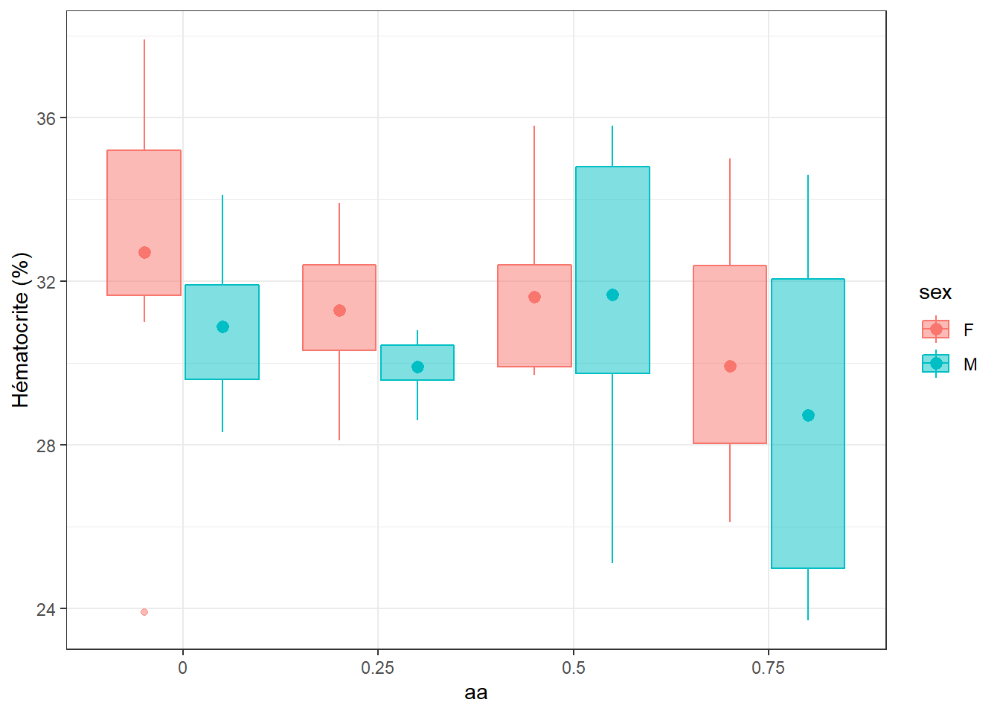
4.1.6 Revisualisation courbes sans les valeurs extrèmes
## aa sex N hct sd se ci
## 1 0 F 7 32.70000 4.5442271 1.7175564 4.202709
## 2 0 M 8 30.88750 1.9569930 0.6919015 1.636087
## 3 0.25 F 5 31.28000 2.2004545 0.9840732 2.732225
## 4 0.25 M 4 29.90000 0.9416298 0.4708149 1.498343
## 5 0.5 F 5 31.62000 2.5723530 1.1503912 3.193998
## 6 0.5 M 8 31.67500 4.0759749 1.4410747 3.407600
## 7 0.75 F 6 29.91667 3.5605711 1.4535971 3.736590
## 8 0.75 M 4 28.72500 5.0645006 2.5322503 8.058751ggplot(df_ic, aes(x = aa, y = hct, colour = sex, group = sex)) +
geom_errorbar(aes(ymin = hct - ci, ymax = hct + ci), width =.1, position = p) +
geom_line(position = p, size = 1) +
geom_point(position = p, size = 2)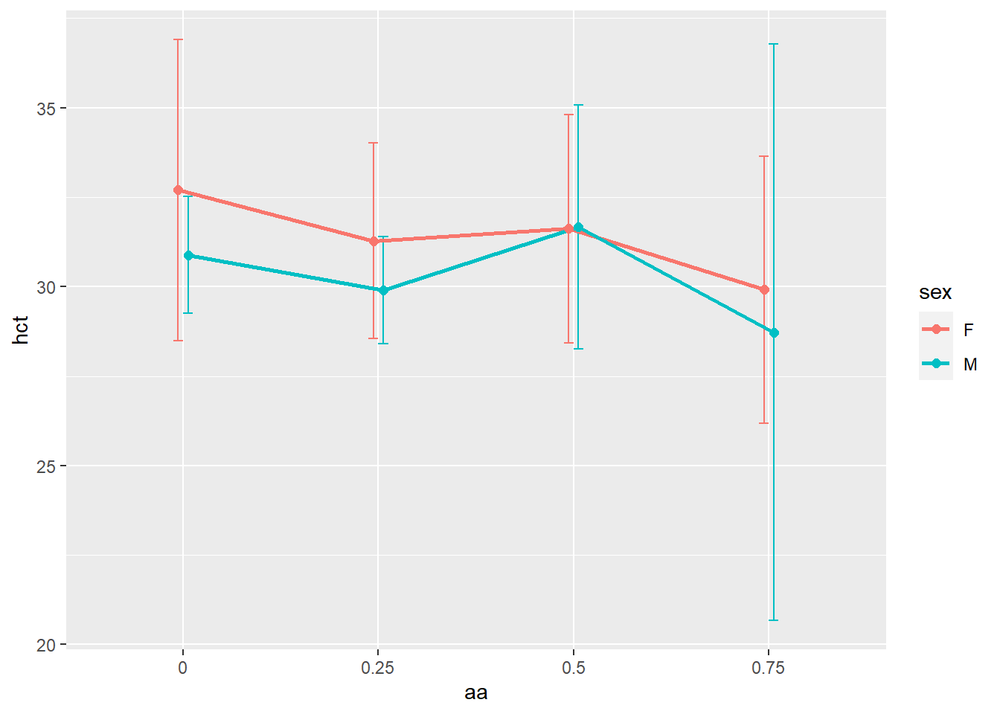
4.1.7 Le modèle
lm <- lm(hct ~ aa * sex,
contrasts = list(aa = contr.sum, sex = contr.sum),
data = df)
Anova(lm, type = 3)## Anova Table (Type III tests)
##
## Response: hct
## Sum Sq Df F value Pr(>F)
## (Intercept) 41701 1 3567.7808 <2e-16 ***
## aa 43 3 1.2301 0.3118
## sex 13 1 1.0986 0.3010
## aa:sex 6 3 0.1766 0.9116
## Residuals 456 39
## ---
## Signif. codes: 0 '***' 0.001 '**' 0.01 '*' 0.05 '.' 0.1 ' ' 1L’interaction n’est pas significative. Pas de différence ni entre les traitements, ni entre genres. Mais vérifions la validité de l’ANOVA.
4.1.7.2 Normalité des résidus
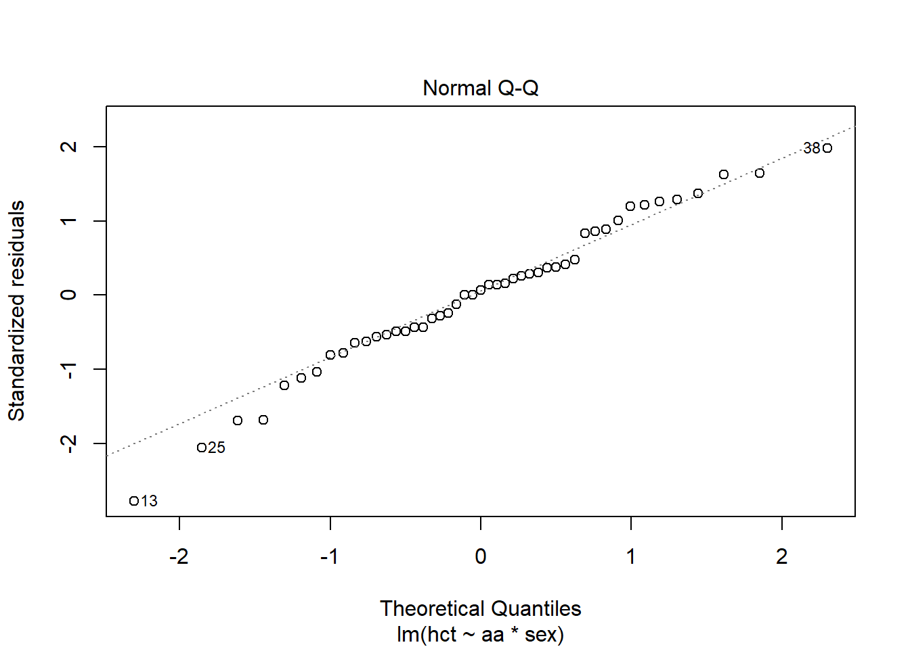
## # A tibble: 1 x 3
## variable statistic p.value
## <chr> <dbl> <dbl>
## 1 residuals(lm) 0.979 0.5614.1.9 Comparaisons par paires
## Anova Table (Type II tests)
##
## Response: hct
## Sum Sq Df F value Pr(>F)
## aa 45.04 3 1.3649 0.2666
## sex 13.72 1 1.2472 0.2704
## Residuals 462.03 42C1 <- glht(lm, mcp(aa = "Tukey"))$linfct
C2 <- glht(lm, mcp(sex = "Tukey"))$linfct
C <- rbind(C1, C2)
C## (Intercept) aa0.25 aa0.5 aa0.75 sexM
## 0.25 - 0 0 1 0 0 0
## 0.5 - 0 0 0 1 0 0
## 0.75 - 0 0 0 0 1 0
## 0.5 - 0.25 0 -1 1 0 0
## 0.75 - 0.25 0 -1 0 1 0
## 0.75 - 0.5 0 0 -1 1 0
## M - F 0 0 0 0 1##
## Simultaneous Tests for General Linear Hypotheses
##
## Fit: lm(formula = hct ~ aa + sex, data = df)
##
## Linear Hypotheses:
## Estimate Std. Error t value Pr(>|t|)
## 0.25 - 0 == 0 -1.1640 1.4012 -0.831 0.902
## 0.5 - 0 == 0 0.0104 1.2594 0.008 1.000
## 0.75 - 0 == 0 -2.4394 1.3603 -1.793 0.342
## 0.5 - 0.25 == 0 1.1744 1.4480 0.811 0.909
## 0.75 - 0.25 == 0 -1.2753 1.5246 -0.837 0.900
## 0.75 - 0.5 == 0 -2.4498 1.4110 -1.736 0.374
## M - F == 0 -1.0955 0.9809 -1.117 0.762
## (Adjusted p values reported -- single-step method)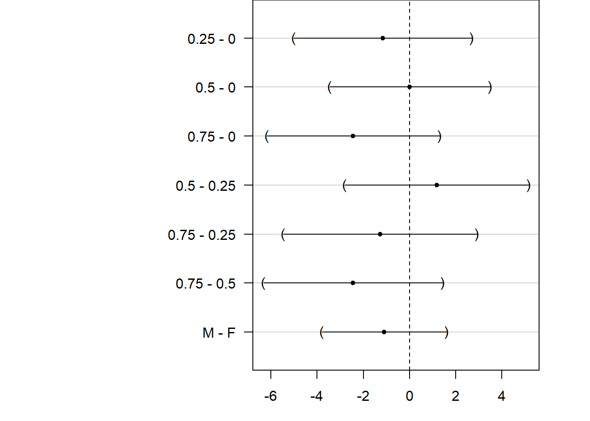
4.2 Volume corpusculaire moyen mcv (fL)
4.2.1 Exploration visuelle, boxplots
ggplot(df, aes(x = aa, y = mcv, colour = sex, fill = sex)) +
geom_boxplot(alpha = 0.5, position = position_dodge(width = 0.8), fatten = NULL) +
stat_summary(fun.y = mean, position = position_dodge(width = 0.8)) +
theme_bw() +
xlab("Dose Acacia auriculiformis") + ylab("Volume corpusculaire moyen (fL)")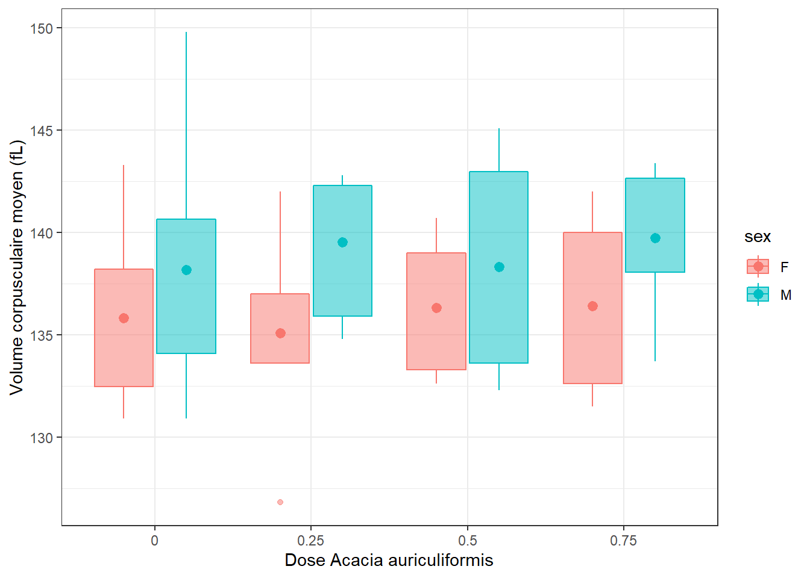
4.2.2 Moyennes et intervalles de confiance
## aa sex N mcv sd se ci
## 1 0 F 7 135.8143 4.521220 1.708860 4.181431
## 2 0 M 8 138.1625 6.222525 2.199995 5.202161
## 3 0.25 F 5 135.0800 5.549054 2.481612 6.890061
## 4 0.25 M 5 139.5400 3.857849 1.725283 4.790152
## 5 0.5 F 7 136.3143 3.375119 1.275675 3.121464
## 6 0.5 M 8 138.3250 5.172385 1.828714 4.324222
## 7 0.75 F 6 136.4167 4.531409 1.849940 4.755422
## 8 0.75 M 4 139.7500 4.359281 2.179641 6.9365894.2.3 Visualisation, courbes
p <- position_dodge(0.1)
ggplot(df_ic, aes(x = aa, y = mcv, colour = sex, group = sex)) +
geom_errorbar(aes(ymin = mcv - ci, ymax = mcv + ci), width =.1, position = p) +
geom_line(position = p, size = 1) +
geom_point(position = p, size = 2)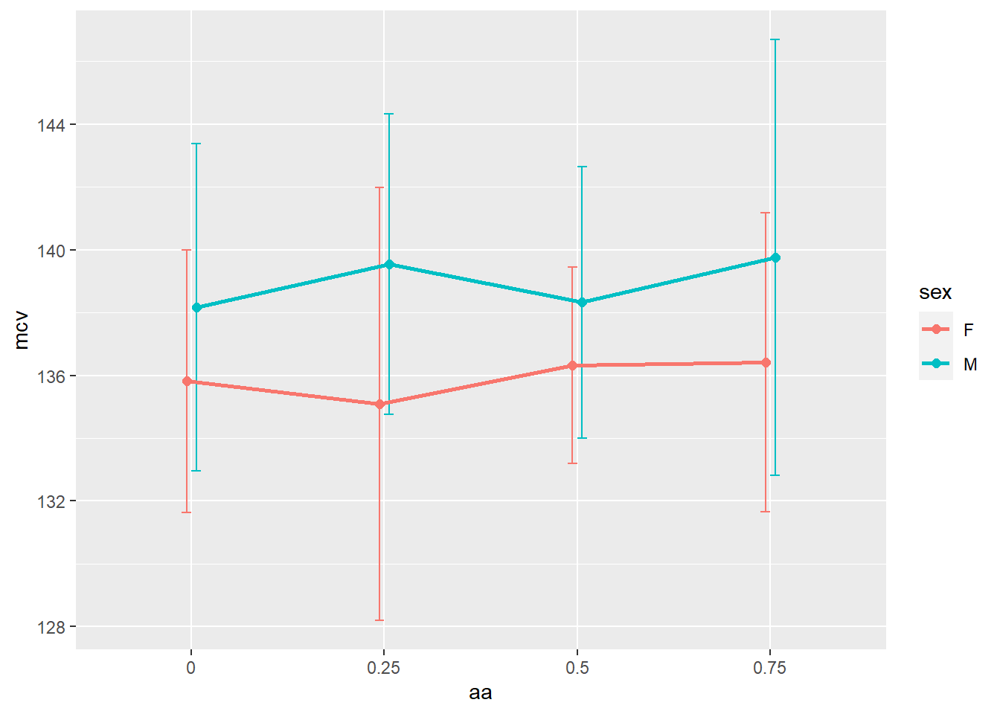
4.2.4 Identifier les valeurs aberrantes extrêmes
## # A tibble: 1 x 6
## aa id sex mcv is.outlier is.extreme
## <fct> <int> <fct> <dbl> <lgl> <lgl>
## 1 0 5 M 150. TRUE FALSE## [1] sex id aa mcv is.outlier is.extreme
## <0 rows> (or 0-length row.names)Aucune observation qui pourrait être exclue en activant le code ci-dessous :
4.2.5 Le modèle
lm <- lm(mcv ~ aa * sex,
contrasts = list(aa = contr.sum, sex = contr.sum),
data = df)
Anova(lm, type = 3)## Anova Table (Type III tests)
##
## Response: mcv
## Sum Sq Df F value Pr(>F)
## (Intercept) 893747 1 37851.9518 < 2e-16 ***
## aa 7 3 0.1007 0.95917
## sex 109 1 4.6248 0.03732 *
## aa:sex 11 3 0.1498 0.92927
## Residuals 992 42
## ---
## Signif. codes: 0 '***' 0.001 '**' 0.01 '*' 0.05 '.' 0.1 ' ' 1L’interaction n’est pas significative. Il y a une différence dans l’effet genre. Mais vérifions la validité de l’ANOVA.
4.2.5.2 Normalité des résidus
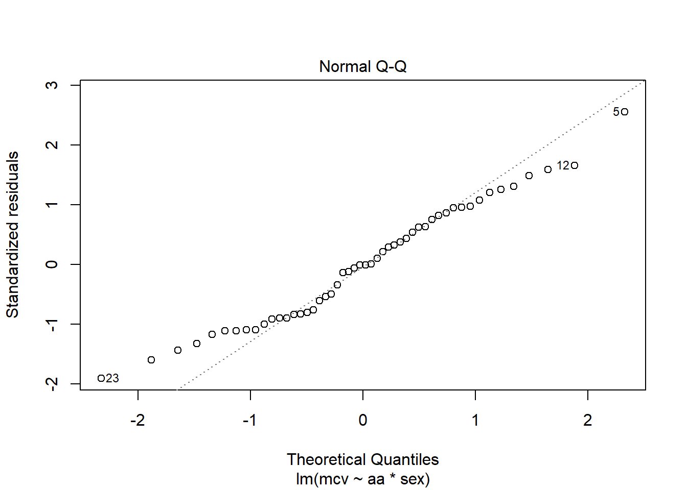
## # A tibble: 1 x 3
## variable statistic p.value
## <chr> <dbl> <dbl>
## 1 residuals(lm) 0.972 0.2854.2.7 Modèle à 1 facteur
## Anova Table (Type II tests)
##
## Response: mcv
## Sum Sq Df F value Pr(>F)
## sex 97.44 1 4.6347 0.03639 *
## Residuals 1009.16 48
## ---
## Signif. codes: 0 '***' 0.001 '**' 0.01 '*' 0.05 '.' 0.1 ' ' 1Il y a une différence d’effet significative entre genre.
4.2.8 Comparaisons par paires
cm <- (SNK.test(lm, "sex", group = TRUE))$groups %>%
mutate(sex = rownames(.)) %>%
dplyr::select(sex, mcv, groups) %>%
as_tibble()
cm## # A tibble: 2 x 3
## sex mcv groups
## <chr> <dbl> <chr>
## 1 M 139. a
## 2 F 136. b4.3 Platelet plt (10^3/μL)
4.3.1 Exploration visuelle, boxplots
ggplot(df, aes(x = aa, y = plt, colour = sex, fill = sex)) +
geom_boxplot(alpha = 0.5, position = position_dodge(width = 0.8), fatten = NULL) +
stat_summary(fun.y = mean, position = position_dodge(width = 0.8)) +
theme_bw() +
xlab("Dose Acacia auriculiformis") + ylab("Platelet (10^3/μL)")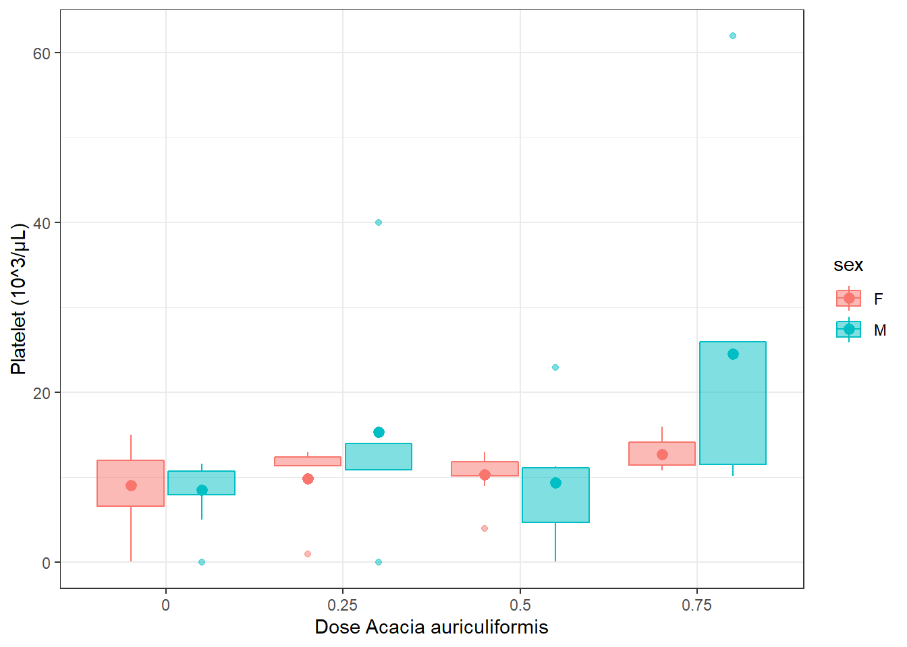
4.3.2 Moyennes et intervalles de confiance
## aa sex N plt sd se ci
## 1 0 F 7 9.058571 5.405215 2.0429792 4.998990
## 2 0 M 8 8.487500 4.007292 1.4167918 3.350180
## 3 0.25 F 5 9.860000 4.996799 2.2346364 6.204345
## 4 0.25 M 5 15.360000 14.805168 6.6210724 18.383044
## 5 0.5 F 7 10.385714 3.066718 1.1591106 2.836241
## 6 0.5 M 8 9.402500 6.844689 2.4199629 5.722303
## 7 0.75 F 6 12.733333 2.186016 0.8924374 2.294083
## 8 0.75 M 4 24.550000 25.014862 12.5074311 39.8042284.3.3 Visualisation, courbes
p <- position_dodge(0.1)
ggplot(df_ic, aes(x = aa, y = plt, colour = sex, group = sex)) +
geom_errorbar(aes(ymin = plt - ci, ymax = plt + ci), width = .1, position = p) +
geom_line(position = p, size = 1) +
geom_point(position = p, size = 2) +
xlab("Dose Acacia auriculiformis") + ylab("Platelet (10^3/μL)")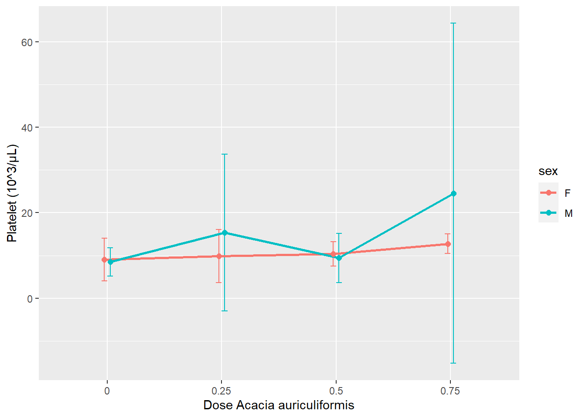
4.3.4 Identifier les valeurs aberrantes univariées
## # A tibble: 7 x 6
## aa id sex plt is.outlier is.extreme
## <fct> <int> <fct> <dbl> <lgl> <lgl>
## 1 0 8 M 0 TRUE FALSE
## 2 0 13 F 0.11 TRUE FALSE
## 3 0.25 17 M 0 TRUE TRUE
## 4 0.25 20 M 40 TRUE TRUE
## 5 0.25 25 F 1 TRUE TRUE
## 6 0.5 31 M 23 TRUE FALSE
## 7 0.75 43 M 62 TRUE TRUE## # A tibble: 14 x 6
## sex id aa plt is.outlier is.extreme
## <fct> <int> <fct> <dbl> <lgl> <lgl>
## 1 F 10 0 15 TRUE FALSE
## 2 F 13 0 0.11 TRUE TRUE
## 3 F 15 0 3 TRUE TRUE
## 4 F 25 0.25 1 TRUE TRUE
## 5 F 35 0.5 4 TRUE TRUE
## 6 F 48 0.75 16 TRUE FALSE
## 7 F 50 0.75 15 TRUE FALSE
## 8 M 8 0 0 TRUE TRUE
## 9 M 17 0.25 0 TRUE TRUE
## 10 M 20 0.25 40 TRUE TRUE
## 11 M 26 0.5 0.12 TRUE TRUE
## 12 M 28 0.5 4 TRUE FALSE
## 13 M 31 0.5 23 TRUE TRUE
## 14 M 43 0.75 62 TRUE TRUEOn exclura les extrêmes suivant le genre et celle de aa qui ne se retrouve pas …
4.3.5 Revisualisation boxplots sans les valeurs extrèmes
ggplot(df, aes(x = aa, y = plt, colour = sex, fill = sex)) +
geom_boxplot(alpha = 0.5, position = position_dodge(width = 0.8), fatten = NULL) +
stat_summary(fun.y = mean, position = position_dodge(width = 0.8)) +
theme_bw() +
xlab("Dose Acacia auriculiformis") + ylab("Platelet (10^3/μL)")
4.3.6 Revisualisation courbes sans les valeurs extrèmes
## aa sex N plt sd se ci
## 1 0 F 7 9.058571 5.405215 2.0429792 4.998990
## 2 0 M 8 8.487500 4.007292 1.4167918 3.350180
## 3 0.25 F 5 9.860000 4.996799 2.2346364 6.204345
## 4 0.25 M 5 15.360000 14.805168 6.6210724 18.383044
## 5 0.5 F 7 10.385714 3.066718 1.1591106 2.836241
## 6 0.5 M 8 9.402500 6.844689 2.4199629 5.722303
## 7 0.75 F 6 12.733333 2.186016 0.8924374 2.294083
## 8 0.75 M 4 24.550000 25.014862 12.5074311 39.804228ggplot(df_ic, aes(x = aa, y = plt, colour = sex, group = sex)) +
geom_errorbar(aes(ymin = plt - ci, ymax = plt + ci), width =.1, position = p) +
geom_line(position = p, size = 1) +
geom_point(position = p, size = 2)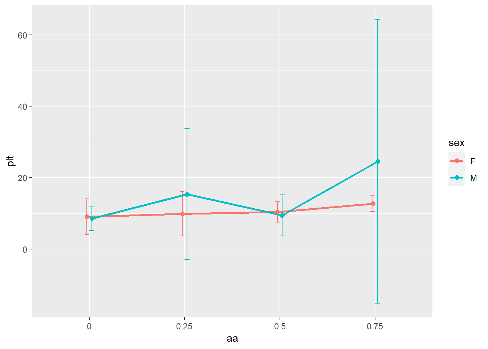
4.3.7 Le modèle
lm <- lm(sqrt(plt) ~ aa * sex,
contrasts = list(aa = contr.sum, sex = contr.sum),
data = df)
Anova(lm, type = 3)## Anova Table (Type III tests)
##
## Response: sqrt(plt)
## Sum Sq Df F value Pr(>F)
## (Intercept) 497.53 1 285.8218 <2e-16 ***
## aa 10.89 3 2.0849 0.1167
## sex 0.68 1 0.3935 0.5339
## aa:sex 3.09 3 0.5915 0.6240
## Residuals 73.11 42
## ---
## Signif. codes: 0 '***' 0.001 '**' 0.01 '*' 0.05 '.' 0.1 ' ' 1Aucun effet détecté. Mais vérifions la validité de l’ANOVA.
Malgré l’exclusion des extrêmes, aucune transformation des données n’a pu améliorer la distribution des données pour respecter les hypothèses de l’ANOVA pour rendre valide l’interprétation.
Passons par la variable de groupe aa_sex :
df <- df_copy %>%
select(id, aa, sex, plt) %>%
mutate(aa_sex = interaction(aa, sex, sep = "_"))
head(df)## # A tibble: 6 x 5
## id aa sex plt aa_sex
## <int> <fct> <fct> <dbl> <fct>
## 1 1 0 M 11.6 0_M
## 2 2 0 M 9 0_M
## 3 3 0 M 10.3 0_M
## 4 4 0 M 10.1 0_M
## 5 5 0 M 5 0_M
## 6 6 0 M 11.3 0_M## # A tibble: 7 x 7
## aa_sex id aa sex plt is.outlier is.extreme
## <fct> <int> <fct> <fct> <dbl> <lgl> <lgl>
## 1 0.25_F 25 0.25 F 1 TRUE TRUE
## 2 0.5_F 35 0.5 F 4 TRUE TRUE
## 3 0_M 8 0 M 0 TRUE FALSE
## 4 0.25_M 17 0.25 M 0 TRUE TRUE
## 5 0.25_M 20 0.25 M 40 TRUE TRUE
## 6 0.5_M 31 0.5 M 23 TRUE FALSE
## 7 0.75_M 43 0.75 M 62 TRUE FALSE4.3.8 Le Modèle à 1 facteur
## Anova Table (Type II tests)
##
## Response: plt
## Sum Sq Df F value Pr(>F)
## aa_sex 145.65 7 1.9749 0.08689 .
## Residuals 368.75 35
## ---
## Signif. codes: 0 '***' 0.001 '**' 0.01 '*' 0.05 '.' 0.1 ' ' 1=> Pas de différence significative
4.3.8.2 Normalité des résidus
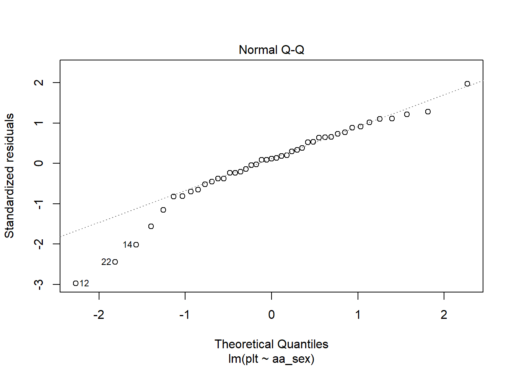
## # A tibble: 1 x 3
## variable statistic p.value
## <chr> <dbl> <dbl>
## 1 residuals(lm) 0.940 0.02674.3.9 Homogénéité des variances
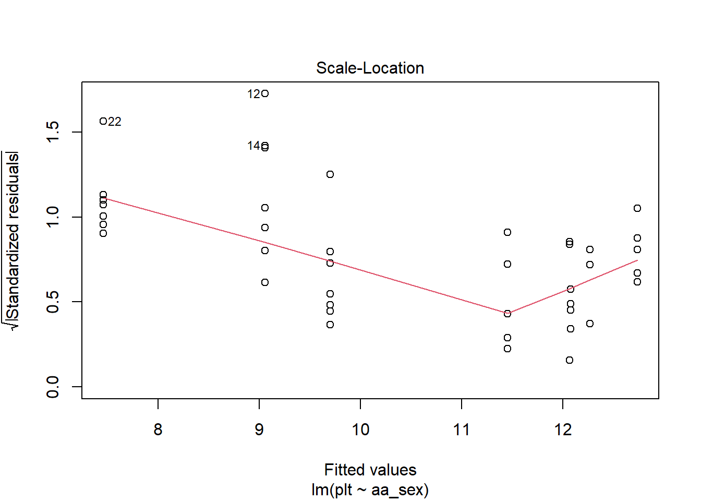
Les hypothèses ne sont toujours pas respectées. Mais avec 1 facteur nous pouvons passer par une alternative non paramétrique.
4.3.10 Test de Krukal-Wallis
Essayons peut-être le non-paramétrique.
## # A tibble: 1 x 6
## .y. n statistic df p method
## * <chr> <int> <dbl> <int> <dbl> <chr>
## 1 plt 50 10.3 7 0.173 Kruskal-Wallis=> Ce test prétend qu’il n’y a pas de différence d’effets significative entre les combinaisons Aa-Sex, sur la concentration en platelets.
df %>%
dunn_test(plt ~ aa_sex, p.adjust.method = "bonferroni") %>%
select(group1, group2, p, p.adj, p.adj.signif) #%>% ## # A tibble: 28 x 5
## group1 group2 p p.adj p.adj.signif
## <chr> <chr> <dbl> <dbl> <chr>
## 1 0_F 0.25_F 0.563 1 ns
## 2 0_F 0.5_F 0.633 1 ns
## 3 0_F 0.75_F 0.213 1 ns
## 4 0_F 0_M 0.311 1 ns
## 5 0_F 0.25_M 0.437 1 ns
## 6 0_F 0.5_M 0.523 1 ns
## 7 0_F 0.75_M 0.157 1 ns
## 8 0.25_F 0.5_F 0.887 1 ns
## 9 0.25_F 0.75_F 0.558 1 ns
## 10 0.25_F 0_M 0.130 1 ns
## # ... with 18 more rowsLa normalité n’étant pas respectée, on s’entiendra ici au résultat du non paramétrique. Pas de différences.